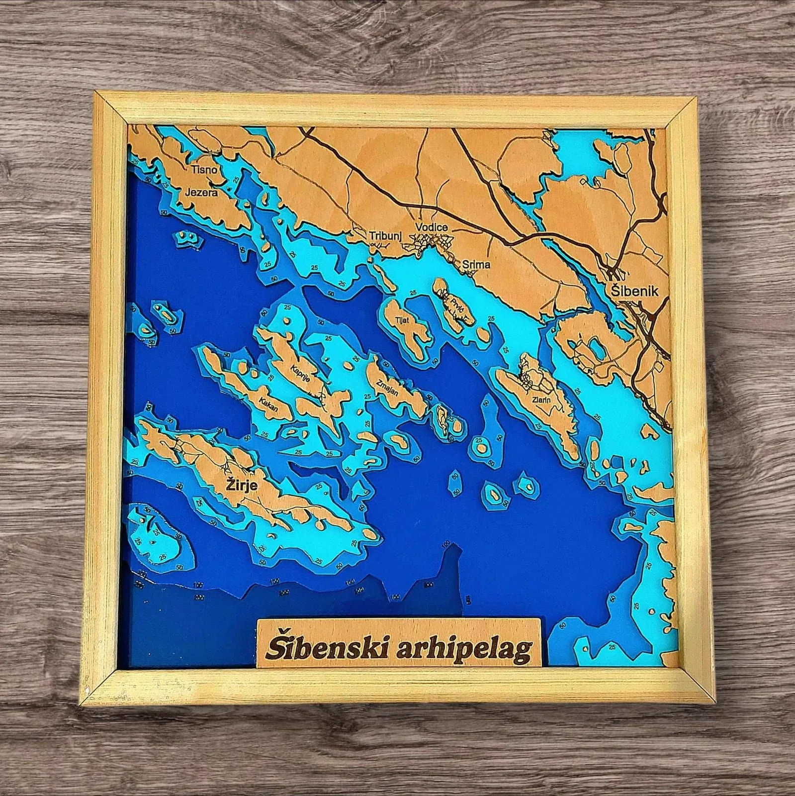

Laserska Magija Preciznosti: Ostavljanje Traga u Vremenu
Objavljeno: 10. listopada 2025.
U doba kada nas digitalni šum neprestano bombardira, darivanje je postalo umjetnost izbora. Svatko može kupiti skupocjeni predmet, ali samo rijetki uspiju poklonu udahnuti – priču.
Tu leži čar personalizacije: ona ne nudi samo proizvod, već i trajno svijedočanstvo pažnje. To je tiha poruka koja šapuće: "Vidio sam te, tvoje želje i tvoju jedinstvenost."
Vječno Urezano: Dodir Uspomene i Savršenstvo Detalja 🧐
Vrijeme je da preispitamo definiciju "dobrog poklona". On više nije mjera potrošenog novca, već mjerilo uloženog truda i duboke emocionalne vrijednosti. Laserska gravura nudi protutežu — ona je strpljiva, neumoljivo precizna i daje težinu svakom urezanom milimetru.

🔬 Preciznost koja priča priču
Laserski snop je poput najfinijeg kista, ali vođen matematičkom preciznošću. Može prenijeti tekst na privjesak veličine novčića, ili pak izraditi složene reljefe 3D karte. Ta mikronska preciznost garantira da će vaš rukopis, logotip ili portret izgledati savršeno oštro, bez obzira na materijal. Za osjećaj duboke topline, rustikalnog šarma i vizualnog kontrasta paljenog drveta, preporučujemo da pogledate našu kolumnu o Pirografiji.
🌳 Plemenitost materijala
Laserska gravura voli plemenite materijale. Kada se laser sretne s drvetom, on ga nježno pali, stvarajući kontrast koji miriše na tradiciju i prirodu. Na metalu ostavlja elegantan, trajan otisak koji prkosi trošenju, dok u akrilu ili staklu hvata svjetlost, pretvarajući ih u luminiscentne uspomene.
Četiri Mogućnosti koje Lasersko Graviranje Otključava 🔑
Lasersko graviranje prelazi granice suvenira i otvara vrata ozbiljnom dizajnu i brandiranju:
- Monumentalna Personalizacija: Kreiranje 3D drvenih karata gradova i planina. Ovdje laser ne samo da gravira ulice i imena, već reže slojeve drva kako bi stvorio opipljivu dubinu terena — pravo umjetničko djelo.
- Poslovna Elegancija: Brandiranje predmeta s logotipom. Laserska tehnologija na kožnom novčaniku ili metalnoj olovci daje profesionalni, minimalistički izgled koji govori o kvaliteti i pedantnosti.
- Suptilne Simbolike: Graviranje teksta na vjenčanim čašama, bočicama ili kutijama. Ovi predmeti postaju idealan personalizirani poklon.
Zaključak: Ostavljanje Traga u Vremenu ⏳
Lasersko graviranje u suštini je arhiviranje osjećaja. Ono osigurava da vaša poruka, vaš logo ili vaša umjetnička vizija ne budu prolazna pojava, već duboki, trajni otisak.
U Pyroprint Damir, mi ne graviramo samo predmete. Mi laserom režemo tišinu, a u svaki urez ugrađujemo obećanje da će vaša priča izdržati test vremena.